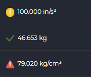

States
1. Introduction
Along the different sections of IDbox it is possible to display an associated status next to the data, which consists of an icon and a text as shown in the following image.

In this way, it is possible to configure and identify one or several specific scenarios such as INVALID, NORMAL, ALARM HIGH, among others. Aspects related to their administration are shown in the following sections.
2. States administration
System statuses can be managed from the section enabled in the control panel as shown in the following figure.

Once inside, two sections are displayed as shown in the following image - a list of states on the left and their properties on the right. The changes made can be persisted by the save button available in the upper toolbar.

The following documentation sections describe the use of each section.
2.1 States list
The left panel shows the list of the statuses registered in the application. They can be filtered by a search term using the search engine located at the top.
Statuses are sorted by ascending priority order, being the first ones less important than the last ones. This way, if a status is made up of several ones, the order will be established according to this criteria. To change the priority, simply click on the row and drag it to the desired position while holding the selection.
2.2 States properties
By clicking on one of the available states in the list, the right panel displays its detailed information as well as the visual aspect in terms of its icon and text. Except for the name, which is an identifier, the other fields listed below can be customized:
- Alias: allows you to identify the state with a custom name.
- Description: customized text describing the scenario represented by the state.
- Color: by using the picker or a hexadecimal/RGB code it is possible to define a representative color for the status.
- Icon: allows you to attach a 16x16px image in PNG format to be shown along the status display.
It is important to note that some states may not be able to be modified by the user.